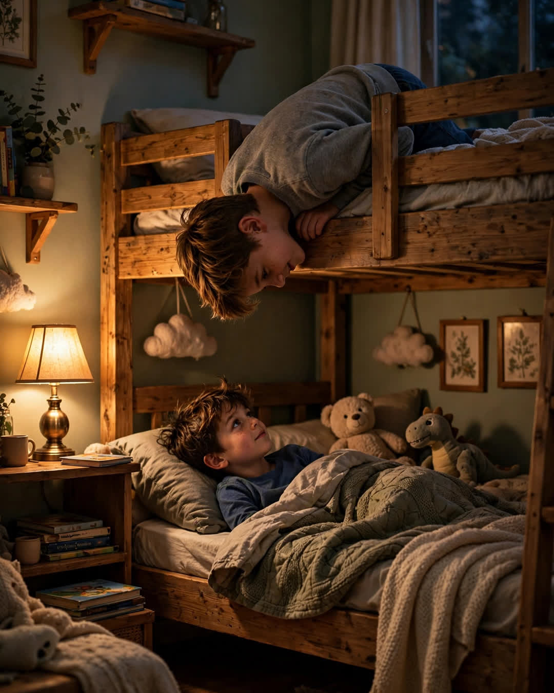

The Top Bunk
A Clipp Kaili original story

The top bunk was never just a bed. It was a country, and my brother Danny ruled it.
I was the bottom-bunk kid, the one who got the ceiling view of his mattress springs and the sound of him turning pages under a flashlight after lights-out. Danny was four years older, which in kid years meant he knew everything — how to whistle through his teeth, how to skip a rock six times, how to tell when Mom was really mad and when she was just tired-mad.
Our best talks happened after midnight. He'd hang his head upside down over the edge of the bunk, hair falling like a curtain, and whisper, "You awake, Sam?" And I'd say yes, even when I hadn't been, because some invitations only come once a night.
He told me things up there he never said in daylight. That he was scared of Dad's temper and scared of turning into it. That he liked a girl named Priya and had absolutely no plan. That sometimes he lay awake worrying about money the way grown-ups did, because he'd heard Mom crying over the bills through the heating vent. I was nine. I mostly listened. But listening, I learned later, is a language too.
The summer Danny left for college, he stripped his bunk down to the bare mattress and stood there holding his pillow like it might speak. "You'll take the top now," he said.
"I don't want the top," I said. "The top is yours."
"The top goes to whoever's still dreaming in this room," he said. "That's you now, shrimp."
Life did what life does. Danny moved two states away. Calls got shorter. Holidays got scheduled instead of simply happening. Some years, the midnight talks felt like something that had happened to two other boys.
Then my wife and I had twins.
Boys. Of course they were boys. And when they turned five and started begging for bunk beds "like real brothers," I drove to three stores before I found a set with a ladder that looked almost exactly like the one Danny used to climb — the one with the third rung that creaked, so Mom always knew.
The first night, I tucked them in and turned off the light, and before I'd even reached the door, I heard it. A small voice from the bottom bunk. "You awake, Eli?"
I stood in that doorway a long, long time.
The next morning I called Danny. We hadn't talked in six weeks. I told him about the bunk beds, and the ladder, and the voice in the dark, and there was a silence on the line that sounded exactly like a man swallowing something big.
"You awake, Sam?" he said finally, and laughed, and I could hear the smile in it. "I've been meaning to ask you that for about twenty years."
We're too old for bunk beds now, and too far apart for midnight. But some nights, after the boys are asleep, my brother and I talk on the phone until one of us yawns — two grown men, holding on to the oldest technology in the world.
A voice in the dark, asking if you're still there.
And someone you love, answering: I am. I always was.
This story is a work of fiction, written to touch hearts and bring families closer.
← Back to all stories